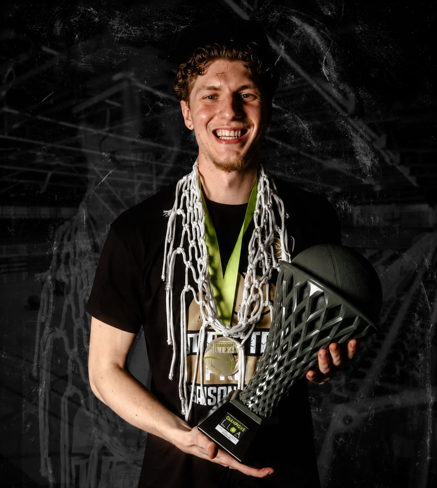
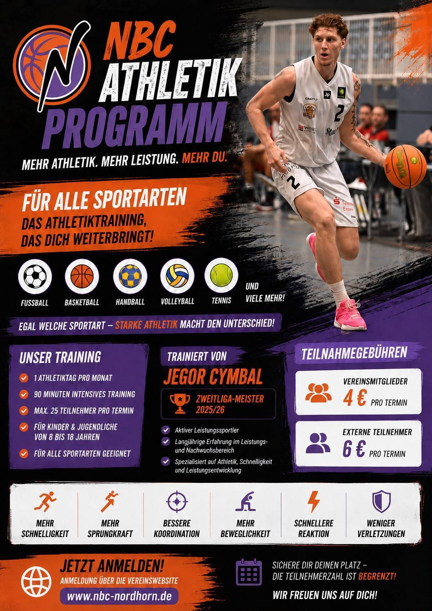

NBC Athletikprogramm: Jegor Cymbal bringt 2. Bundesliga-Expertise auf den Trainingsplatz
Die NBC Baskets Nordhorn starten ein neues sportartenübergreifendes Athletikprogramm für Kinder und Jugendliche von 8 bis 18 Jahren – trainiert von Jegor Cymbal, amtierender 2. Bundesliga-Meister Saison 2025/2026.
Die Athletik ist die Basis jeder Sportart. Ob Fußball, Basketball, Handball, Tennis oder Volleyball – wer athletisch gut aufgestellt ist, ist schneller, sprungkräftiger und verletzungsresistenter. Genau hier setzt das neue Athletikprogramm des NBC an.
Jegor Cymbal bringt seine Erfahrung als Profisportler und 2. Bundesliga-Meister direkt in das Training ein. Einmal pro Monat, 90 Minuten intensiv, maximal 25 Teilnehmer pro Termin – so wird das Training zu etwas Besonderem.
Der nächste Termin findet am 17.07.2026 um 10:00 Uhr statt. Treffpunkt ist die Lupo Halle, In- und Outdoor.
„Die Athletik ist die Grundlage jeder Sportart", so Jegor Cymbal. Und damit meint er nicht nur Basketball, sondern alle Sportarten. Das Programm ist offen für alle – unabhängig davon, welchen Sport man betreibt.
Preise: Vereinsmitglieder zahlen 4 € pro Monat, externe Teilnehmer 6 € pro Monat. Anmeldung ausschließlich über die Website.

Artikel teilen
Für Instagram: Link kopieren und in deinem Post oder Story verwenden.